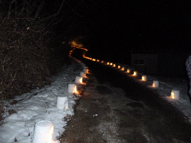
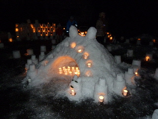
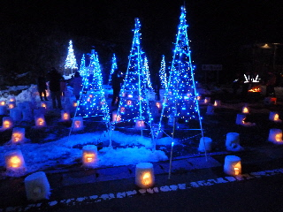

さんべ志学の雪あかり。
2013/02/10
このイベントは初めてです。道のあちこちに灯りがともってて、いい雰囲気でした。

今の時期三瓶は雪でいっぱいのはずなんですが、今年は雪不足だそうです。
なので道に雪がなくて歩きやすかったです。
道路も雪が少なかったので、三瓶まで行き易かったです。

灯篭だけじゃなくて、雪像もありました。

電飾のイルミネーションもありました。雪に色が反射して綺麗でした。
今年は天気が良くって、お客さんがとっても多かったそうです。
会場付近は沢山の人で賑わっていました。
早い時間に行けば良かったですが、少し遅いと人気商品は売り切れてました。
コロッケとか、焼き鳥とか、お餅とかも食べたかったなー。
時間があったら、無料の温泉も入りたかったなー。
次に機会があったら、早めに行きたいと思います。